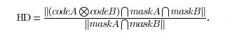

Sejarah Digital Image Analysis
Digital Image Analysis merupakan sebuah operasi untuk menghitung besaran kuantitatif image, seperti halnya mendeteksi sebuah tepi objek dan representasi area. Penggunaan. Digital Image Analysis pertama kali pada tahun 1962.
Pada tahun 1962, Digital Image Analysis dikembangkan oleh Metal Research sebuah perusahaan di Cambridge yang merupakan bagian dari Leica Group. Yang mana menggunakan kamera televisi sebagai input yang biasa disebut dengan QTM A (Quantitative Television Microscope) yang dioperasikan secara manual.
Pengembangan Digital Image Analysis semangit cepat karena penggunaan digital image analysis juga dibutuhkan pada sebuah PC.
Iris Recognition
Iris Recognition merupakan sebuah autentifikasi untuk mengetahui identitas seseorang berdasarakan pola unik pada bagian yang berbentuk cincin pada pupil mata. Iris pada umumnya memiliki warna coklat, biru, abu-abu, hijau dengan pola yang kompleks. Hal ini lah yang menjadi Iris sebagai biometrik yang dapat digunakan sebagai verifikasi
Iris Recognition sudah cukup berkembang hingga digunakan dalam Smartphone saat ini. Namun iris harus berjarak dengan ukuran yang sesuai tidak terlalu dekat ataupun jauh untuk memperoleh gambar iris yang dapat dianalysis.
.jpg) Penggunaan iris recognition pada smartphone
Penggunaan iris recognition pada smartphone
Digital Image Analysis digunakan untuk mencocokan pola iris antara subject dengan data yang ada. Analysis yang dilakukan ialah membandingkan dengan teori Hamming Distance yaitu dengan mengukur kesamaan jarak antara satu bagian dari pola iris dengan bagian lain dari iris tersebut.
Penangkapan gambar dapat dilakukan dengan berbagai macam cara diantaranya dengan metodde Visible Wavelength (VW) atau dengan menggunakan Near Infrared (NIR). Kedua metode memiliki keunggulan dan kekurangan masing-masing.
source :